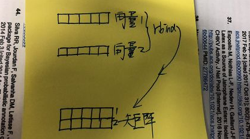
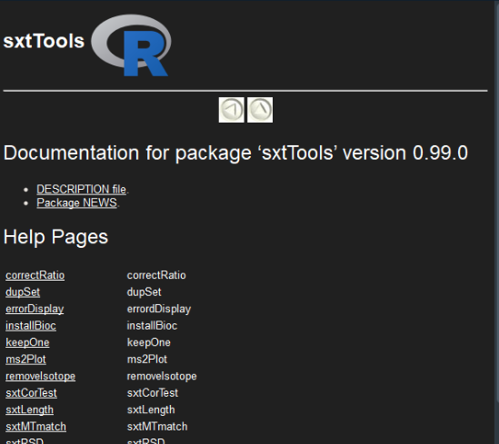
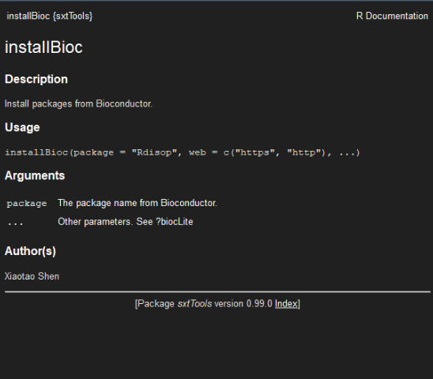

这篇文章开始介绍R的基本知识，来让初步学习R语言的同学们能够快速入门。已经入门的同学请略过本文，否则你将浪费人生中的十分钟。。。
1. 数据结构
向量 （vector）：R语言中的战斗机
向量类型是R语言的核心，很多运算都涉及到向量。我们先来一个最简单的向量。
直接在控制台（Rstudio左下角的那个地方）中输入：
1 | x <- 3x |
x就是一个向量，一维的，3就是元素，只是只有一个，光杆司令。
1 | y <- c(1, 2, 3) |
“<-”是R语言中赋予的符号，在这个公式中，意味着我们把3这个值赋给x这个变量名，这样x就是3，但是3不一定是x。
我们再创建一个长度不是1的向量，
1 | y <- c(1, 2, 3) |
y就是一个长度为3的向量。length函数是用来查看向量长度的函数。对于y向量来说，他的元素就是1,2,3。向量中的元素是有顺序的，第一个从1开始计算，比如我想要查看向量y的第一个元素，那么就使用y[1]。y[1]代表的就是向量y的第一个元素，那么同样的y的第三个元素就是y[3]。
矩阵（matrix）：
R中的矩阵概念跟数学中完全一样。矩阵可以理解为二维的向量，也就是包括行数和列数。下面我们举个栗子：
1 | m <- rbind(c(1,2), c(2,3)) |
rbind是一个函数，我们简单介绍一下。rbind直接从字面上理解是row combine，也就是行组合。什么意思呢？就是把几个向量按照行从上到下组合起来。用图可以很好地理解：（灵魂画师上线。。。）

rbind函数就是把向量1和2然后按照行组合起来，成为一个新的矩阵。从这上面可以看到必须满足两个条件，向量1和2必须长度一致。同样还有一个函数，cbind，大家应该猜到了，就是column combine，也就是把几个向量按照列从左到右组合。
比如
1 | m2 <- cbind(c(1,2,3,4), c(2,3,4,5)) |
dim是查看矩阵的行数和列数。那么，怎么查看矩阵的某个元素呢？和向量一样，需要使用[]来看，但是要看单个元素，得使用行数和列数来进行确定，比如:
1 | m2[1,2] |
就是指m2的第1行和第2列的元素是什么东东。
那么，能够直接从矩阵中提取子向量和子矩阵呢？当然阔以：
1 | m2[2,] |
注意：#也就是井号，是注释的意思，也就是#后面的代码是不会运行的，所以如果你想要对代码进行注释说明，那么就可以像上面一样，加一个#号，然后在后面写下注释的内容。
数据框（data.frame）
数据框和矩阵是非常类似的，但是完全不一样的，就是矩阵中的元素类型必须一致，而数据框中的元素类型则可以不同。
比如我们有3个同学的语文，数学成绩。第一列是同学的名字（字符型，character），第二列是语文成绩（数字型，numeric），第三列是数学成绩（数字型，numeric）。这时候就得使用数据框了。
1 | d <- data.frame(name = c("Shen", "Li", "Tu"), |
使用函数data.frame建立数据框。name，Yuwen，Shuxue是建立好之后的数据框d的列名。
前面介绍了R语言中的最为常见的几种数据结构，差不多可以满足我们后面的需求了。后面再遇到新的东西，我们再介绍。
2. 函数
和其他语言一样，函数是R语言中的战斗机。和数学概念一样，y = f(x)，也就是输入变量x，然后经过函数f的处理，得到结果y。
函数也是一个对象，比如：
1 | fun <- function(a, b) { |
fun就是一个最为简单的函数。他要做的就是把a和b加起来，输出a和b之和。在这里面，a和b是形参（形式参数），不是具体的参数。只是用来把位置占起来。那么我们使用fun来做一个简单的计算：
1 | fun(1,2) |
这时候1和2就是实参（实际参数），也就是把1和2带进去，计算1和2的和。很多函数（也就是功能）都是别人已经写好的，比如求和sum，求根sqrt等等。 函数写好之后，很多都在不同的包（package）中，下面就介绍一下R语言中的包。
3. 包（package）
R包，类似C、Python中库的概念，指包含特定领域的函数、数据、文档等的集合。通过调用包，可以直接使用包中现成的数据、函数等，使开发方便快捷高效。
- R的强大在于包含了各种各样的包，使用包非常有利于便捷开发。
- 一些功能在现有的包中并不存在，需要自己实现，实现后通过打包方便代码的复用。
- 每个包涵括一个领域相关的函数数据文档等，通过包可以有效地组织代码结构，有利于开发.
在R中，所有的函数都是封装好，放在包中的，包是R语言互相交流的最好方法。下面简单介绍一下包的安装，使用，等我们后面会介绍怎么创建，分享自己的R包。
如何找到自己的需要的R包
大家要相信很多方法都已经是存在的了，所以你能想到的功能，很多已经被别人做过了，已经有了现成的工具可以使用，也就是R包。因此，如果想实现一个功能，首先要想到的就是是不是已经存在了这样的工具，而不是自己去写。那么如何找到自己所需要的R包呢，这时候就得靠搜索引擎了（谷歌一下，你就知道）。当然，在我大天朝，谷歌早已经404了，如果你能够使用，或者能够翻墙接触到这个万恶的网站，那是最好的，如果不行，那就用必应（必应内心OS：终于想我到了啊。。。），最次，使用百度（百度：嗯？）。
如何安装R包
R包一般会公开在三个地方：
- CRAN：The Comprehensive R Archive Network，这是R core team的R包官方存放地方。安装放在这些的R的网址是https://mirrors.tongji.edu.cn/CRAN/，怎么安装这些包呢？使用下面代码即可：
1 | install.packages("package.name")#将package.name替换为自己的要安装的包的名字即可。 |
- Bioconductor：这个是大部分的生信相关的包存放的地方，网址https://www.bioconductor.org/，安装使用代码如下：
1 | ## try http:// if https:// URLs are not supported |
- Github：CRAN和bioconductor都需要经过一定的审核，才可以发布，因此另外一个最为常用的代码托管网站，github，就更为常用友好了，只要把自己写的代码和包放在github上，就可以安装R包了。安装github上的R包，需要使用到R语言大神Hadley Wickham写的包，devtools了。因此，首选需要安装这个包，代码如下：
1 | install.packages("devtools") |
如何获得R包及函数的帮助文档
安装包之后，如要观察这个包里面所有的函数，以及这个R的说明，比如对于我们刚才安装的sxtTools这个包。我们就可以使用下面代码看这个包里面都含有哪些函数：
1 | help(package = "sxtTools") |

如果想看某个具体的函数的信息，可以使用下面的代码：
1 | ?installBioc |

每个函数都有详细的说明，可以通过看这些详细的官方文档来学习怎么使用，如果想更便捷，那就直接上~google必应（万不得已，用百度。。。）。
下期预告
下期我们开始学习怎么读取，输出数据，敬请期待~~~